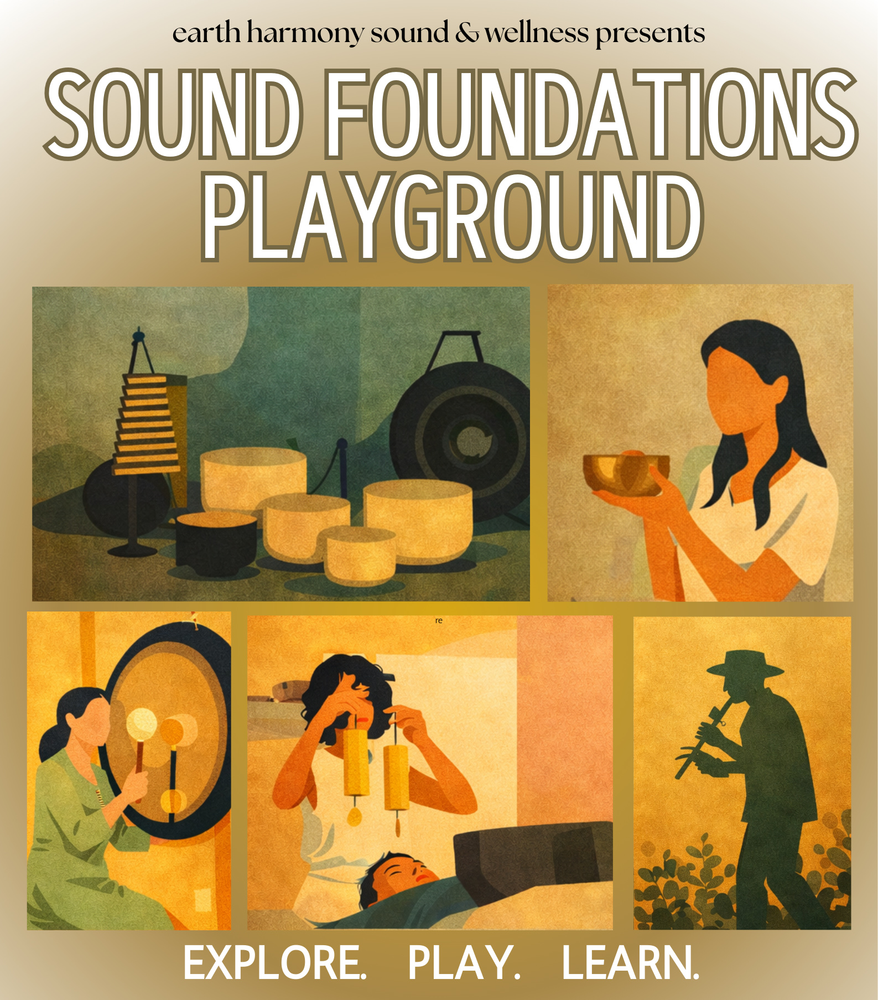
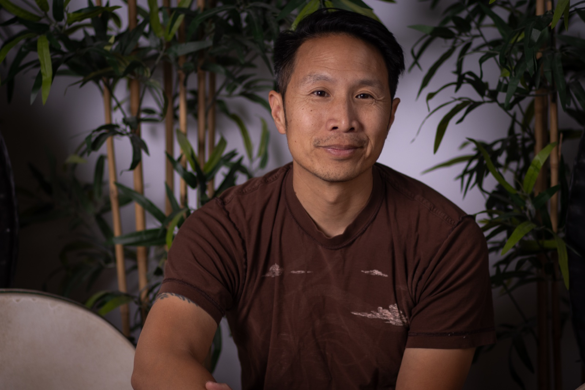
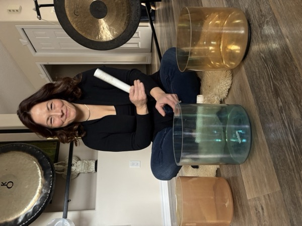
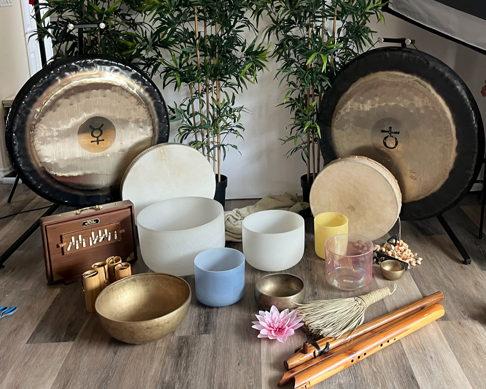

Maybe you've felt the call? You went to a few sound baths, and now you're curious about sound therapy — not just receiving it, but learning to facilitate it. Maybe you can't explain the draw to tinker with the singing bowls. Maybe you are a psychologist or massage therapist and you know that Sound Therapy is a powerful add-on you can see yourself offering — there's a place to start in Edmonton that approaches it a bit differently.
Sound healing certifications are everywhere right now. The truth is, right now there's no real industry standard — no agreed-upon curriculum, no governing body. That means the quality varies wildly. Some are excellent, some are a weekend and a PDF.
The truth is, it's not rocket science, but I can always tell the difference between a well-seasoned, attuned practitioner and someone who's just learning how to get an instrument to make a nice sound.
Sound Foundations Playground takes a different approach. Instead of rushing to certify, we focus on building real skill — through your playful curiosity, deep listening, embodiment and instrument knowledge. The ability to hold a group space is a skill that comes later or that you may have already started to develop. The credential that matters is your experience that grows into competence, not a piece of paper.
Sound Foundations Playground is a monthly hands-on workshop where you get to pick up the instruments, and an amazing selection of them, learn the principles behind them, and explore what sound healing actually feels like.

My name is Marcus Fung. I am a trained musician, music educator and facilitator with over 20 years of experience as a sound therapy practitioner and training in expressive arts therapy. I've been out in the field every day in one form or the other, working with a diversity of populations — children, the elderly, immigrant populations, corporate settings, etc. My formal training is in classical and jazz piano, but my approach to sound healing draws on 2 decades of working with groups, music theory, education principles, and a deep emphasis on embodiment — not just intellectual understanding, and not just intuition. Both matter, but the body is where the real discovery and learning happens. In short, your body is the real instrument.
My teaching philosophy is built around a simple idea: low skill, high sensitivity. Sound healing instruments — singing bowls, gongs, flutes, chimes, voice — are instruments that anybody can learn to play. You don't need musical training to create meaningful, healing sound. What you need is presence, intention, and an invitation to feel and listen — to the instrument, to the room, and to yourself.
I've led sound therapy trainings in Edmonton and Calgary and continue to develop a training pathway for practitioners at every level — from complete beginners to working healers who want to deepen their practice. These sessions are monthly and then build up to a larger weekend immersion.
Each Sound Foundations Playground session runs about 2.5 hours and focuses on a specific instrument or theme — singing bowls one month, easy-to-play flutes the next, gongs, voice, or a combination. No two sessions are exactly the same.
Here's how it flows:
Warm-ups — We start with grounding exercises, fun and simple sound explorations. Getting out of your head and into your body. Tuning your body, your senses and your ears. Settling in.
Educational points — The principles behind the instrument: how it produces sound, technique, how to listen for overtones and resonance. The music theory and science that makes it work — delivered in a way that's accessible and practical.
Exploration and play — This is the heart of it. You pick up the instruments. You experiment. You make sounds that surprise you. You learn by doing, not by watching. This isn't a lecture — it's a playground.
Q&A — Space to ask anything. About the instruments, about starting a practice, about the science, about the experience. No question is too basic.
The whole approach comes down to three words: Learn. Play. Explore.

This is for you if:
Sound Foundations Playground is the entry point. No prerequisites, no pressure. Just show up ready to learn and play.
This isn't a one-off workshop you attend and forget. Sound Foundations runs monthly, which means you build on what you learn. You develop relationships with other participants. You become part of a community of people exploring sound healing together in Edmonton.
Each session stands on its own — you can drop in any month — but there's a cumulative effect for those who come regularly. Your senses get sharper. Your confidence grows. Your understanding deepens. You start to get it in your body.
Because my focus is on actively developing larger training programs for Edmonton, Sound Foundations participants are the first to shadow out in the field, know about upcoming intensives, weekend trainings, and advanced opportunities. These sessions become the ground floor for feedback.
There are online courses and weekend certifications out there. Quality varies quite a bit. But most of them are heavy on information and light on experience. You watch videos. You read PDFs. You get a certificate.
Sound Foundations is the opposite. It's embodied. I have over 20 years of experience offering therapeutic sound events, and a strong background in teaching and facilitation. It's time for me to pass on some of my knowledge and continue on my learning journey. Come feel the vibration in your body. Hear the difference between striking a bowl and inviting it to sing. Come learn what it means to hold space with sound — not just make noise.
Low skill, high sensitivity. That's the approach. The instruments are accessible. The depth comes from how you listen.

Sound Foundations Playground runs monthly in Edmonton. Small groups, intimate setting, all instruments provided.
Check our upcoming sessions and reserve your spot — spaces are limited to 5-6 participants per session.
For questions or to learn more about my sound healing training pathway, reach out at earthharmonysoundhealing@gmail.com.
— Marcus
Earth Harmony Sound & Wellness | Edmonton, Alberta